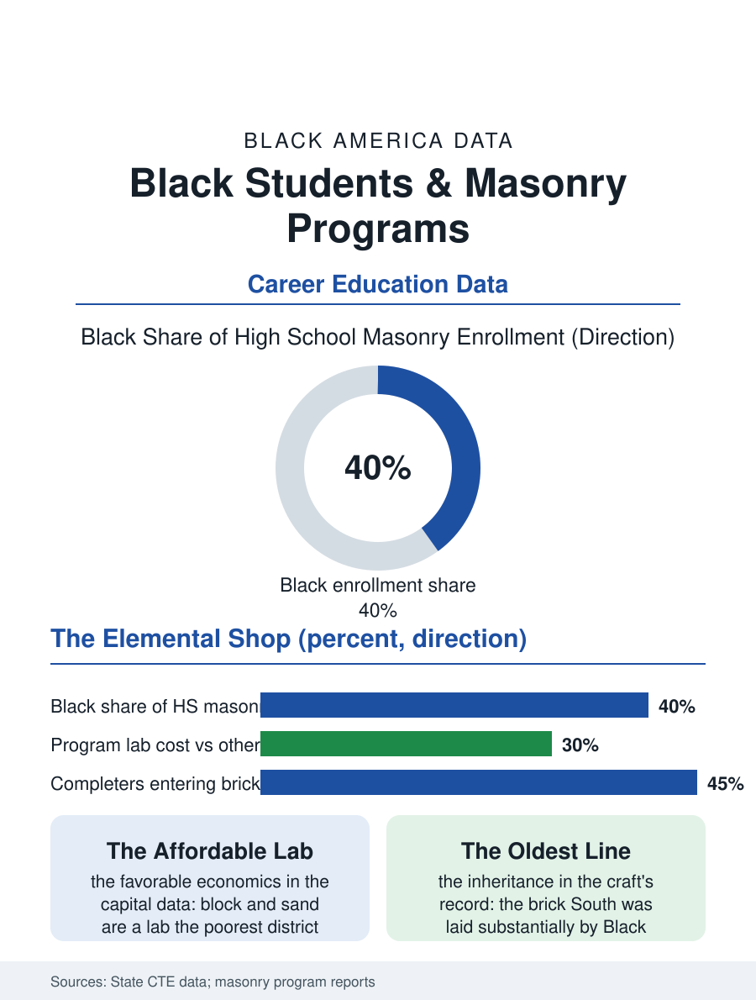

Black Education
To the Level: Black Students and Masonry Programs
The string line and the level, the affordable lab, and the oldest unbroken craft line in the building. The masonry file.

Masonry is the building trades' most ancient craft and its CTE shop the most elemental: the block, the brick, and the mortar, laid to the line at the program's wall, in a trade whose Black craftsmen built a substantial share of the South's brick fabric and whose school pipeline still runs on their pattern. This article reads the masonry program file.
The Line and the Level
The pedagogy is the wall itself: the student's courses rising against the string line in the lab's yard, the bond patterns and the mortar's consistency taught by the trowel's apprenticeship in the pattern unchanged since the guilds, with the instructor's eye for the plumb being the assessment the rubric cannot improve. The program's economics are the CTE file's most favorable, the lab's capital being the block and the sand whose cost the district's budget can actually carry, so that the masonry program survives in the schools the expensive shops have left, an accessibility that makes it the trades' presence in the poorest districts' catalogs and its students' first construction credential in the pattern of the ladder's lowest sound rung. The competition file, the bricklaying's speed and accuracy contests judged by the industry's masters, is the program's season as the weld's bend test is the booth's, its verdict public and its champions recruited on the spot. The scaffold's file is the program's safety summit as the booth's fume is the welding's, the height taught as the trade's permanent condition with the harness's religion practiced from the first course above the waist, in a lab whose single-story walls make the lesson abstract until the first job's third story makes it memory, a gap the instructors close with the stories the trade always closes it with. The tuckpointing's specialty, the old wall's joints renewed one at a time with the matched mortar, is the restoration niche's school form, its patience being the quality the preservation employers test for at the hiring wall.
The Hands That Built the South
The historical file is the program's inheritance stated plainly: the brick South, its courthouses and its campuses and its mill villages, was laid substantially by Black masons, enslaved and free, whose craft was among the few the era's economy paid a premium for in Black hands, and the trade's continuation through the family and the lodge into the modern contractor file is one of the business section's oldest unbroken lines, the school program being its current institutional form in the districts that keep it. The modern market's greeting is the restoration's as much as the new work's, the historic fabric's repointing being a specialty whose masters are aging out against the preservation file's demand, a niche the program's graduates with the old bonds in their hands are positioned to inherit at the craft's premium. The instructor in the masonry yard is the trade's elder by design, the master whose own production years are behind him and whose eye is the program entire, in the pattern of the licensed shops' recruitment from the craft's injured and its wise.
Courses, Rising
The masonry file closes on the wall's permanence as the program's argument, because the student's semester stands in the yard in the weather, demolished for the next class's practice in the program's honest cycle, the impermanence of the school wall against the permanence of the trade's real one being the lesson the instructors make explicit at the first laying. The articulation into the bricklayers' apprenticeship follows the trades' pattern, the completer's hands pre-tested in the only examination the trade has ever trusted. The association counts the programs in the CTE census's construction cluster. The file's last entry is the string line's snap at the morning's first course, the chalk's blue ghost on the block, the student's trowel taking the mortar at the instructor's tempo, in the yard where the South's oldest building lesson is still taught the only way it has ever been, one course at a time, to the level. The wall comes down in the term's last week for the next class's sand, and the students who laid it strike it themselves, the trade's humility administered by their own hammers.
More in Black Education
Black Educational Attainment: High School Parity, the College Gap
About 89 percent of Black adults hold a high school diploma and one in four holds a bachelor's degree or higher — the attainment ladder, the college completion gap, and the generational trend.
Historically Black Colleges and Universities: Enrollment and Degrees
More than 100 HBCUs enroll roughly 290,000 students and award about one in six Black bachelor's degrees — an outsized share from a small sector. The federal education data.
Black College Enrollment: 2.4 Million Students
About 2.4 million Black students are enrolled in American colleges — nearly two-thirds of them women. The NCES enrollment data by sector, level, and trend.
Source: State career and technical education data; Mason Contractors Association and bricklayers' training program data.